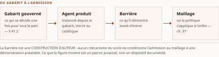
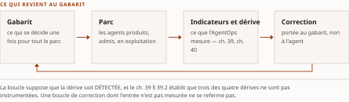

Chapitre 41La fabrique d'agents : produire, certifier et réémettre le parc
Livre IV — Appliquer, exploiter, produire et composer : AgentMesh, AgentOps, fabrique d'agents et synthèse architecturale. Troisième mouvement — produire (ch. 41). Chapitre unique du mouvement, **et seul chapitre de matière neuve de ce Livre**
§ 41.0Ouverture : pourquoi ce chapitre existe, et à quelles conditions il devrait survivre
Lecture de l'auteur marquage porté à l'ouverture et régissant le chapitre entier (CA-IV-07, qui l'impose nommément aux chapitres de matière neuve). Ce que le socle établit : rien. ⚠ Et depuis le 28 juillet 2026, ce « rien » ne se lit plus comme le vide du socle mais comme celui de ce chapitre : le socle consolidé compte 159 entrées, et aucune n'est mobilisable ici. Aucun volume source ne porte cette matière, et le seul relevé daté du chapitre est un fait de dépôt (§ 41.1). Ce qu'il n'établit pas : la totalité de ce qui suit — l'existence d'un objet nommé « fabrique d'agents » dans une organisation quelconque, la pertinence du découpage en huit sections, et jusqu'à la nécessité du chapitre.
Le motif de son insertion est un constat de couverture, et il est vérifiable. La somme décrit le maillage qui admet les agents (ch. 37) et l'exploitation qui mesure leur comportement (ch. 38-40) ; elle décrit l'architecture qui les compose (ch. 43) et le blueprint qui les instancie (ch. 45). ⚠ Elle ne nommait nulle part le plan qui les produit — constat établi par balayage de la zone des chapitres du plan, zéro occurrence, et c'est ce constat, non un fait du domaine, qui a motivé l'insertion (décision 12 du TOC, sur instruction d'auteur du 27 juillet 2026).
Un constat de couverture d'un plan n'est pas un fait sur le monde, et la nuance est la seule chose que ce chapitre puisse affirmer sans réserve : le plan ne traitait pas la production ; il ne s'ensuit pas que la production soit un objet constitué, ni qu'elle mérite un chapitre. C'est exactement ce que D-8 avait à trancher, et elle l'a fait le 27 juillet 2026, après cette rédaction : chapitre maintenu sous réserve, socle non constitué, ⚠ le retrait demeurant l'issue si les lots échouent.
Les huit sections se lisent donc comme huit questions, dont cinq sont instruisibles et assorties du corpus à ouvrir et du critère qui clorait l'instruction — § 41.2, § 41.3, § 41.4, § 41.5 et § 41.7. ⚠ Les trois autres n'appellent aucun lot, et le motif diffère à chaque fois : la désambiguïsation (§ 41.1) tranche un emploi de mots, les conditions de réfutation (§ 41.6) énoncent ce qui renverserait le chapitre, et la sortie de périmètre (§ 41.8) déclare une matière que la somme ne traite pas — aucune des trois n'attend quoi que ce soit d'une source.
Ce qui ne s'y trouve pas est déclaré au même titre : aucune recette d'organisation, aucun modèle de maturité (siège ch. 43 § 43.5), aucun outil nommé, aucun chiffre du domaine.
§ 41.1Ce que « fabrique » désigne ici, et les trois emplois dont il faut la séparer
Le chapitre s'ouvre sur ce tri plutôt que de le renvoyer au glossaire, et le motif est celui qui a déjà coûté une passe au corpus. C'est le geste que la branche (f) du garde-fou d'homonymie du Vol. III impose déjà à « AgentMesh » (ch. 37 § 37.0), et la cause est identique : deux sens incompatibles à quelques lignes d'écart. ⚠ Trois des quatre emplois vivent déjà dans le plan de cette somme, et deux d'entre eux se confondraient à l'œil — celui de ce chapitre et celui du ch. 43 § 43.1.
| Emploi | Objet | Ce qu'il désigne | Où il vit |
|---|---|---|---|
| F1 | Fabrique d'agents (agent factory) | le plan de production d'un parc : gabarits gouvernés, catalogue interne, barrière de certification, réémission pilotée par la mesure | ce chapitre — construction d'auteur |
| F2 | Fabrique d'identité — et fabrique de confiance | l'étage qui émet l'identité, non celui qui produit l'agent | ch. 43 § 43.1, qui en est le siège |
| F3 | Titre d'éditeur | un nom de publication, jamais un terme d'architecture | bibliographie du Vol. I (Monographie §7.10.4) |
| F4 | Patron factory du catalogue GoF de patrons de conception | un patron qui instancie un objet à l'exécution — aucun rapport avec un plan de production organisationnel | Annexe G |
Tableau 41.1 — Les quatre emplois du mot « fabrique » dans la somme, et le lieu de chacun. ⚠ Aucun chapitre n'emploie le terme sans que le sens visé soit déterminable de sa phrase (décision 12c du TOC) ; le glossaire (Annexe E) porte les quatre.
L'emploi F3 est le seul relevé daté de tout ce chapitre, et sa borne est plus étroite que celle que le plan lui donne. Constat sur pièce, 27 juillet 2026 : la bibliographie du Vol. I porte, sous Microsoft, une publication dont le titre contient l'expression — Agent Factory: Designing the Open Agentic Web Stack —, datée du 24 septembre 2025 ; l'entrée regroupe par ailleurs un second document, dont le titre ne porte pas l'expression, et porte le marqueur de ressource vivante. ⚠ L'éditeur est nommé plutôt qu'anonymisé : la parade de péremption couvre les dénominations commerciales et les versions, jamais l'attribution (décision 15 du TOC) — un fait de dépôt dont l'attributeur est tu cesse d'être vérifiable. ⚠ Le plan écrivait « la série Agent Factory » ; ce que la pièce constate est un titre, non une série — le socle ne documente pas l'existence d'une série sous ce nom : absence de documentation, non fait négatif vérifié (degré 3). ⚠ La table d'appuis du TOC est alignée sur ce constat depuis la v0.28 (remontée R-IV-52, § 41.9) : le passé de ce verbe est la trace de l'écart, non un flottement — et une pièce qui continuerait d'opposer au plan une forme qu'il ne porte plus fabriquerait la divergence qu'elle croit relever. ⚠ Et ce que ce fait de dépôt atteste s'arrête là où il commence : l'emploi du terme par cet éditeur, à une date, rien de plus. Il n'entre pas au socle, il ne caractérise pas l'objet, et aucun énoncé de ce chapitre ne s'y adosse.
La distinction F1/F2 est celle dont la confusion coûterait le plus cher, et elle tient à un verbe : la fabrique d'identité émet ; la fabrique d'agents produit. ⚠ Le départage de ces deux étages a son siège au ch. 43 § 43.1 : ce chapitre y renvoie et ne le refait pas ; ce qui lui appartient en propre est la table des quatre emplois ci-dessus.
§ 41.2Le gabarit d'agent gouverné : ce qui se décide une fois pour tout le parc
Construction d'auteur ; sources primaires à constituer.
La proposition est la suivante : un gabarit d'agent gouverné est l'artefact par lequel une organisation décide une fois, pour une classe d'agents, ce qu'elle refuserait de décider à chaque agent. Ce qu'il fixerait — bornes de finalité, outils admis, politique d'approbation, exigences de trace — et ce qu'il laisserait à l'agent sont deux listes ; ni l'une ni l'autre n'est portée par une source.
Un gabarit n'est pas un cadriciel, et la distinction n'est pas verbale : les cadriciels de composition — ce qui exécute une orchestration — sont au ch. 23, et ce chapitre ne les reconstruit pas. Un gabarit décrit ce qu'un agent a le droit d'être ; un cadriciel décrit comment il tourne.
Le seul argument que ce chapitre puisse opposer à un lecteur sceptique vient d'un autre chapitre, et il est cité comme tel. Le ch. 39 § 39.2 établit — dans les bornes de son propre socle — que des trois dérives qu'il traite, et qu'il déclare inégalement documentées, celle que les cadres canadiens nomment est celle que le seul relevé d'instrumentation versé au socle n'instrumente pas, et il en tire une obligation de conception : ce qui n'est pas instrumenté doit être borné à l'émission. ⚠ Un gabarit est un candidat au lieu de ce bornage ; qu'il en soit le bon lieu n'est établi par rien.
Ce qu'il faudrait ouvrir pour clore la question. Corpus : les référentiels d'ingénierie logicielle traitant du gabarit d'application gouverné (golden path, paved road) et leur transposition documentée à un parc d'agents ; les schémas de profil d'agent déjà relevés par le Livre II, au titre de ce qu'ils rendent obligatoire à la déclaration ; toute publication d'organisation décrivant un gabarit d'agent en production. Critère de clôture : qu'au moins un corpus primaire décrive un artefact fixant, pour une classe d'agents, les quatre catégories ci-dessus — ou que son absence soit établie par balayage plutôt que présumée. ⚠ Identifiants du corpus, écrits parce qu'un critère de clôture qui ne nomme pas ses sources est inexécutable (décision 15 du TOC, alinéa b-iii) : les schémas de profil d'agent à relire sont ceux qu'énumèrent le ch. 15 § 15.1 (carte d'agent signée : anatomie et valeur probante) et le ch. 15 § 15.3 (registres gouvernés) ; le lot s'ouvre sur cette énumération, non sur une description. ⚠ Une instruction infructueuse est un résultat : elle rendrait la section retirable, ce que D-8 prévoit.
§ 41.3Le catalogue interne et le registre gouverné : deux objets, deux autorités
Adossement au ch. 15 (registres gouvernés, carte d'agent signée) et au ch. 16 (passeport), sans les reconstruire. Construction d'auteur, marquée telle.
La distinction à tenir, sous peine de doublon d'autorité, est celle-ci : le registre gouverné est le lieu où une identité devient opposable à des tiers ; le catalogue interne est le lieu où l'organisation sait ce qu'elle produit et exploite. ⚠ Confondre les deux redonnerait au catalogue une valeur probante qu'aucune spécification relevée ne lui reconnaît — et le ch. 15 a établi, dans ses propres bornes, que même le registre gouverné n'a pas cette valeur au régime où le corpus le documente.
Quatre propriétés distinguent les deux objets, et elles sont proposées, non relevées.
| Registre gouverné (ch. 15) | Catalogue interne (ce chapitre) | |
|---|---|---|
| Ce qu'il rend possible | qu'un tiers vérifie une identité qu'il n'a pas émise | que l'organisation énumère ce qu'elle a produit |
| À qui il est opposable | à des tiers, dans les limites que le Livre II a bornées | à personne — c'est un instrument de gestion, non de preuve |
| Ce qu'il porte de plus | l'ancrage, dont le Livre II établit qu'il est le verrou | le gabarit d'origine de chaque agent, et son état de certification |
| Ce qui le peuple | l'émission | la fabrique |
Tableau 41.2 — Registre gouverné et catalogue interne : deux objets, deux autorités. ⚠ Construction d'auteur en totalité — aucune ligne de ce tableau n'est portée par une entrée de socle.
Une seule chose relie ce tableau à un constat établi ailleurs, et elle vient du ch. 40 § 40.2 : la grille minimale y demande un dénominateur — une source d'énumération du parc — et déclare que le socle n'en documente aucune qui soit opposable à l'inventaire attendu (degré 3). Le catalogue interne est un candidat à ce dénominateur ; ⚠ qu'il le fournisse effectivement n'est établi par rien, et un candidat proposé à l'endroit exact où une lacune est déclarée est précisément l'énoncé qu'aucune relecture ne peut réfuter.
Ce qu'il faudrait ouvrir. Corpus : les spécifications de registre déjà relevées par le Livre II, relues au titre de ce qu'elles disent d'un usage interne ; les publications décrivant un inventaire d'actifs applicatifs gouverné et son articulation à un annuaire d'identités. Critère de clôture : qu'un corpus primaire distingue explicitement les deux autorités, ou qu'aucun ne les distingue — l'un et l'autre résultat sont exploitables. ⚠ Identifiants du corpus (décision 15, alinéa b-iii) : les spécifications de registre à relire sont celles qu'énumère le ch. 15 § 15.3, et les annuaires ceux du ch. 15 § 15.2 ; les quatre pièces dont l'autorité est en cause sont assemblées au ch. 16 § 16.1. Le lot s'ouvre sur ces trois sections, nommées, et non sur « les spécifications déjà relevées ».
§ 41.4La barrière de certification : ce qu'un agent démontre avant d'être admis au maillage
Adossement au ch. 37 § 37.5 (le maillage comme point d'application) et au ch. 47 § 47.9 (barrière d'évaluation au déploiement) ; ⚠ le constat cité plus bas vient du ch. 37 § 37.4, où il est établi.
Le grain diffère des deux, et il se déclare. Le ch. 47 traite la barrière au grain de l'artefact et de sa mise en service ; ce chapitre au grain du parc et de son admission. Un artefact franchit une barrière une fois ; un parc en franchit une à chaque agent, et la question devient celle du débit autant que celle du critère. ⚠ Le ch. 47 n'était pas rédigé à la date de cette pièce : le renvoi a été posé comme renvoi de plan, et il n'a pas été re-vérifié contre le texte — rédigé depuis, hors portes — qui a paru après lui.
La proposition est étroite : le maillage vérifie l'agent qui se présente ; il ne dit rien de ce qui l'a produit. Le ch. 37 § 37.4 l'établit dans ses propres bornes — la première question de la grille qu'il applique demande un identifiant que le mécanisme produit, et le mécanisme documenté n'y répond pas : ce qu'il porte est l'évaluation d'une politique contre des invocations de méthodes, non une émission, une vérification cryptographique ni une révocation. ⚠ Et la source range l'émission ailleurs plutôt que de la déclarer manquante : elle en fait l'objet du Livre II et écrit que le maillage n'a jamais prétendu s'en charger. ⚠ Que « produire » et « émettre » ne se recouvrent pas est une lecture de ce chapitre, non un énoncé de sa source — elle est posée au § 41.1, et elle ne s'adosse à aucun fait. La barrière de certification serait le geste qui décide de ce qui peut se présenter ; ⚠ qu'un tel geste existe, et qu'il soit distinct du point d'application, n'est établi par rien.
Et une difficulté héritée s'y transporte intacte, ce qui est le seul énoncé fort de cette section. Le plan renvoie au problème de l'oracle — comment sait-on qu'un comportement est correct quand on ne dispose pas d'un résultat attendu de référence ? — relevé au ch. 47 § 47.9. Une barrière de certification hérite de la même difficulté et ne s'en affranchit pas en changeant d'échelle : certifier mille agents ne rend pas l'oracle plus disponible qu'il ne l'était pour un.
Une barrière se qualifie par ce qu'elle démontre, jamais par ce qu'elle promet (R-02 du Vol. III, balayé par prudence) : une barrière qui admet sans oracle atteste un passage, non une propriété. Et ⚠ le passeport d'agent ne figure dans aucune spécification à date (R-01 du Vol. III ; siège ch. 16) : une barrière ne peut donc pas être décrite comme « vérifiant le passeport », et ce chapitre ne l'écrit pas.
Ce qu'il faudrait ouvrir. Corpus : la littérature de test métamorphique et d'évaluation sans oracle, déjà relevée par le plan au titre du ch. 47 ; les référentiels de certification de composants logiciels transposables, sous réserve d'une filiation établie plutôt que réinventée ; toute publication décrivant une porte d'admission à un maillage. Critère de clôture : qu'un critère d'admission documenté soit relevé avec ce qu'il démontre — et non ce qu'il annonce. ⚠ Identifiants du corpus (décision 15, alinéa b-iii) : le problème de l'oracle et la littérature de test métamorphique sont relevés par le plan à la relève v0.19, au titre du ch. 47 § 47.9 (jeux d'essai de référence et barrière d'évaluation au déploiement), dont le lot hérite le corpus sans le recopier ; la barrière au grain du parc se lit contre le ch. 37 § 37.5. ⚠ Ces désignations sont des points d'entrée, non des sources : aucune n'a été ouverte par ce chapitre.

§ 41.5La boucle de réémission : de l'indicateur et de la dérive au gabarit corrigé
Adossement au ch. 39 § 39.2 (dérive), au ch. 39 § 39.4 (versionnement du parc) et au ch. 40 § 40.2 (grille minimale d'indicateurs). Construction d'auteur.
C'est ici que l'AgentOps cesserait d'être une discipline de constat. La proposition tient en une phrase : ⚠ un indicateur qui ne réémet rien mesure sans corriger. Le ch. 40 § 40.2 produit quatre grandeurs et une colonne de ce qui manque ; le ch. 39 § 39.2 produit trois dérives dont une n'est pas instrumentée par le seul relevé d'instrumentation versé au socle. La boucle de réémission serait le geste qui transforme l'un et l'autre en correction du gabarit dont l'agent est issu, plutôt qu'en correction de l'agent lui-même.
La distinction est la seule chose que cette section apporte, et elle est réfutable : corriger l'agent traite l'occurrence ; corriger le gabarit traite la classe. Ce que le ch. 39 § 39.4 établit dans ses bornes — on sait versionner ce qu'un agent est autorisé à faire, on ne sait pas restituer ce qu'il était autorisé à faire à l'instant où il l'a fait — s'applique au gabarit avec la même force : une boucle de réémission dont on ne peut pas restituer l'état antérieur du gabarit ne se documente pas, elle se raconte.
Le ch. 39 § 39.4 renvoie d'ailleurs à cette section — promouvoir suppose un gabarit à promouvoir, et il déclare ne pas le fournir —, et l'adossement est donc mutuel : ce chapitre-ci ne peut pas fonder la boucle sur un chapitre qui la lui renvoie. Le socle ne documente ni la boucle, ni le gabarit, ni leur articulation : absence de documentation, non fait négatif vérifié (degré 3).
Ce qu'il faudrait ouvrir. Corpus : les publications d'exploitation décrivant une correction de gabarit déclenchée par un indicateur de production ; la littérature de gestion de configuration traitant de la propagation d'une correction de modèle à des instances déjà déployées. Critère de clôture : qu'un mécanisme documenté relie une mesure de production à une modification d'artefact d'origine, avec son délai de propagation — le délai est la partie qui manque partout ailleurs dans ce Livre, et il manquerait ici de la même manière. ⚠ Identifiants du corpus (décision 15, alinéa b-iii) : les trois points d'entrée internes sont nommés — ch. 39 § 39.2 (les trois dérives, dont une non instrumentée), ch. 39 § 39.4 (GitOps du parc) et ch. 40 § 40.2 (la grille minimale et sa colonne de manques) ; ce sont eux que l'instruction doit confronter à une publication d'exploitation, et non « la littérature ».

§ 41.6La fabrique comme point de concentration : ce qu'elle centralise, ce qu'elle fragilise
Cette section porte les conditions qui renverseraient ce chapitre, et elles sont à écrire comme telles, non comme réserves de style — même exigence qu'au ch. 37 § 37.9. Un chapitre qui ne peut pas être renversé n'affirme rien ; ⚠ et un chapitre sans socle qui ne peut pas être renversé n'est même pas discutable.
| # | Condition | Ce qui la rendrait constatable |
|---|---|---|
| 1 | Gabarit unique et monoculture de parc — un gabarit qui décide pour tout le parc propage aussi ses défauts à tout le parc | un incident dont la cause remonte au gabarit et non à l'agent ; ou, à l'inverse, l'absence documentée de corrélation entre agents issus d'un même gabarit |
| 2 | File d'attente de certification comme goulot — une barrière qui admet trop lentement est contournée, et un contournement documenté vide la barrière de son objet | une mesure de délai d'admission rapportée au rythme de production ; ⚠ le socle n'en porte aucune (degré 3), et le ch. 40 § 40.5 établit seulement que le coût est une contrainte de premier ordre, en [C] |
| 3 | Équipe-fabrique en point de défaillance unique — la centralisation qui fait la valeur du dispositif fait aussi sa fragilité | une indisponibilité documentée, ou une mesure de dépendance ; ⚠ c'est la troisième condition du ch. 37 § 37.9, transposée d'un point d'application à une équipe, et la transposition est une lecture, non un constat |
| 4 | L'écart entre ce que la fabrique croit produire et ce que le maillage admet réellement | un relevé d'agents admis au maillage sans passage par la fabrique ; ⚠ c'est le pendant exact de la première condition du ch. 37 § 37.9 — un dispositif dont on ne peut pas énumérer ce qui l'a contourné ne fournit pas la garantie qu'il annonce |
Tableau 41.3 — Les quatre conditions de réfutation du chapitre 41. ⚠ Construction d'auteur ; aucune n'est instruite, et une condition posée n'est pas une condition éprouvée.
La quatrième est la plus instructive, parce qu'elle rejoint le résultat du ch. 37 par l'autre bout. Le ch. 37 demande quelles arêtes le maillage ne médiatise pas ; celui-ci demande quels agents la fabrique n'a pas produits. Les deux questions ont la même forme — l'énumération du complément —, et ni l'une ni l'autre n'a de réponse documentée.
§ 41.7L'organisation de la fabrique : qui opère quoi
Aucune revendication de provenance ici, et la forme le dit. La source de cette matière est portée par le ch. 45 § 45.6, qui en reste le siège ; ce chapitre n'en tire qu'un renvoi interne. C'est le motif pour lequel la table détaillée de ce chapitre ne porte aucun marqueur de provenance : en porter un ici serait une seconde revendication du même texte.
Ce que ce chapitre peut écrire sans empiéter tient en une question, et le ch. 45 § 45.6 la pose lui-même à son terme : les rôles qu'il répartit répondent de ce qui tourne ; qui répond de ce qui est produit ? ⚠ Et la répartition dont elle part est bornée à sa source : le ch. 45 § 45.6 déclare que le socle n'établit pas la répartition des responsabilités entre équipes, et que la sienne est une inférence d'auteur intégrale — ce chapitre n'en hérite donc aucun titulaire nommé. ⚠ Le socle ne documente aucune répartition des responsabilités de production d'un parc d'agents : absence de documentation, non fait négatif vérifié (degré 3).
Et la question n'est pas rhétorique : le ch. 39 § 39.4 a établi, en [C], que les agents qui maintiennent le parc sont eux-mêmes des agents et relèvent du même régime que ceux qu'ils surveillent. La même récursivité s'appliquerait à la fabrique — l'outillage qui produit les agents serait lui-même à produire —, et rien n'établit où elle s'arrête.
Ce qu'il faudrait ouvrir. Corpus : les publications d'organisation décrivant une répartition nommée des responsabilités de production d'un parc logiciel gouverné, distincte de sa répartition d'exploitation. ⚠ Identifiants du corpus (décision 15 du TOC, alinéa b-iii) : le point d'entrée interne est le ch. 45 § 45.6, siège de l'organisation de la fabrique pour toute la somme, dont ce lot reprend la répartition d'exploitation sans la reconstruire ; la récursivité se lit contre le ch. 39 § 39.4. Critère de clôture : qu'une source primaire nomme un titulaire de la production distinct du titulaire de l'exploitation, ou que le balayage établisse qu'aucune ne les distingue — les deux résultats sont exploitables, et le second rendrait la section retirable.
§ 41.8Ce que la fabrique ne fait pas : la couche d'exécution reste hors périmètre
Cette section est la plus importante du chapitre, et elle est entièrement négative. Le risque 14 du TOC n'est pas comblé par ce chapitre, et il faut l'écrire ici plutôt que le laisser croire.
Le harnais — le programme qui héberge la boucle de l'agent et porte la persistance de session, les modes, les sous-agents, la chaîne d'approbation d'outils, l'admission d'extensions et la compression de contexte — n'est traité par aucun chapitre de la somme. ⚠ Produire un agent n'est pas l'exécuter : la fabrique décide de ce qui entre au parc ; le harnais décide, en dernier ressort, d'exécuter l'appel.
Trois conséquences, et la troisième est celle qu'on oublie. Un : la porte G-5 conditionne le Livre IV entier et n'était pas franchie à la rédaction — l'arbitrage du risque 14 est la décision d'auteur D-2, que ce chapitre ne consomme pas. ⚠ La table détaillée du plan nomme encore D-7 pour ce risque — forme antérieure à l'affectation de D-7 au risque 15 —, et c'est le PRD qui fait foi sur la gouvernance : déviation déclarée (décision 8). ⚠ Elle a été prise depuis, le 27 juillet 2026, par une autre passe et après cette rédaction : sections dans l'existant, sans chapitre neuf — des sections que ce Livre n'a pas écrites, et le risque 14 n'en est pas comblé pour autant. Deux : le ch. 37 § 37.6 le rencontre par l'autre bout — l'admission par passerelle y est nommée comme contrôle de chaîne d'approvisionnement, et ce qui exécute l'appel après l'admission n'y est pas traité davantage. Trois : ⚠ le plafond de cinquante chapitres rend le comblement coûteux et le déclare — un chapitre neuf sur le harnais serait interdit sans la fusion qui le paie (décision 13 du TOC). Le plafond ne tranche pas le risque 14 ; il en rend le coût explicite. ⚠ Et c'est sur cette contrainte-là que D-2 a écarté l'issue « chapitre neuf » — par une contrainte de plan, non par un jugement de fond, la décision le déclarant elle-même.
Le socle ne documente pas la couche d'exécution agentique : absence de documentation, non fait négatif vérifié (degré 3). Et cette absence-ci n'est pas de la même nature que les autres du chapitre : les précédentes portent sur une matière que la somme prétend traiter, celle-ci sur une matière qu'elle déclare ne pas traiter.
Synthèse : ce que le chapitre lègue à la somme
Section de sortie sans homologue direct dans la source — construction d'éditeur.
Ce chapitre lègue moins que les autres, et le déclarer est le premier de ses legs.
- La désambiguïsation d'« agent factory ». Quatre emplois, dont trois vivent dans le plan de la somme : le plan de production ici, la fabrique d'identité au ch. 43 § 43.1, le patron factory à l'Annexe G ; le quatrième est un titre d'éditeur. ⚠ L'Annexe G n'est pas rédigée et ne le sera pas (décision 26 du TOC, 2 septembre 2026) : son siège est le catalogue de patrons du Vol. III,
annexe-e-catalogue-patrons.md— et l'Annexe E, glossaire, a le sien auannexe-d-glossaire.mddes Vol. II et III. Les deux renvois de cette pièce désignent donc un texte qui existe, au lieu d'attendre un texte qui ne viendra pas. Aucun chapitre n'emploie le mot sans que le sens soit déterminable de sa phrase. C'est le seul legs du chapitre qui ne dépende d'aucune instruction. - Une question, posée une fois : d'où vient l'agent admis, et par quel geste est-il réémis quand la mesure le condamne ? Les ch. 37 à 40 ne la posent pas ; elle est ici, et elle y est ouverte, non résolue.
- Quatre conditions de réfutation, dont deux sont les transpositions déclarées de celles du ch. 37 § 37.9. ⚠ Une transposition est une lecture — le déclarer est ce qui la distingue d'un constat.
- Le rappel que le risque 14 n'est pas comblé. ⚠ C'est un legs négatif, et le plus opposable du chapitre : le ch. 49 § 49.12 tient le registre des lacunes résiduelles, et celle-ci en fera partie quelle que soit l'issue de D-8.
- Cinq lots d'instruction formulés, avec leur corpus et leur critère de clôture (§ 41.2, § 41.3, § 41.4, § 41.5, § 41.7). ⚠ C'est ce que le chapitre produit à la place d'un contenu, et une instruction infructueuse resterait un résultat.
Ce que le chapitre ne lègue pas — et la liste est longue à dessein. Aucun fait. Aucune entrée de socle. Aucun chiffre, aucun seuil, aucun délai. Aucun outil nommé, aucune organisation nommée. Aucun modèle de maturité — son siège est au ch. 43 § 43.5. Aucune recette d'organisation. Et aucune garantie de survie : D-8 a maintenu le chapitre sous réserve et laissé le retrait comme issue si les cinq lots échouent — il disparaîtrait alors, et les ch. 42-50 redeviendraient les ch. 41-49 ; la renumérotation inverse est prévue, et elle est le prix déclaré de l'insertion. ⚠ La fourchette « ch. 42-51 » que ce paragraphe portait décrivait l'état v0.22 du plan, à cinquante et un chapitres : elle est périmée depuis la fusion v0.23, qui a payé l'insertion et ramené le plan à cinquante — un retrait ferait donc revenir neuf chapitres, non dix. La carte de la décision 13d se chaîne à celle de la 12b ; elle ne la réécrit pas.